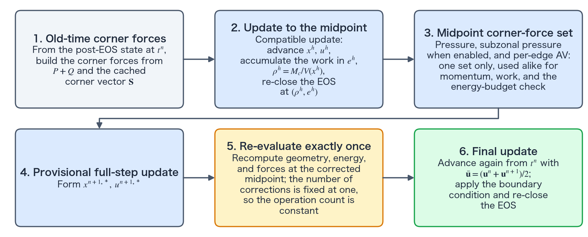

Time integration
Each 1D hydrodynamic half-step uses RK2-Average with a compatible energy update.
Time integration
At driver level, hydro is the half-step operator in the default laser full → hydro half → conduction full → radiation full → hydro half sequence. Each hydro half-step runs a complete cycle of the selected integrator over that half interval, with EOS re-closure before the next operator consumes the state. The integrator advances this half interval as one step of its own; below, the middle of that interval is the midpoint, and the update over the whole interval is the full-step update.
RK2-Average is the sole integrator for the 1D Lagrangian step (NUMERICS §3.1.10). Input validation raises a ConfigError for any value of the removed key Numerics.hydro.time_integrator and instructs the user to delete it.
The predictor advances the nodes by half of the hydrodynamic interval using the entry forces. It computes midpoint density from the predicted cell volume and advances internal energy using the actual volume change, entry pressure, and entry viscous work. The equation of state then supplies the midpoint pressure and matter sound speed, and the artificial viscosity is evaluated at the midpoint state.
The corrector starts from the entry state and updates the nodal velocities using the midpoint pressure and viscosity. Its geometric measure comes from the trial displacement over the interval at the predicted midpoint velocity. After applying the nodal constraints, the corrector moves the nodes with the mean of their entry and corrected velocities. The compatible energy update uses the same displacement and force measures to compute pressure and viscous work. The method is second order in time for smooth hydrodynamic flow with exchange off and ionization fixed at entry. Split electron–ion exchange or coupling to changing ionization held at entry reduces the declared time order to one.
In 2D RZ, pc_v0 is retained to reproduce frozen configurations from the time before the time_integration key existed; a frozen configuration without the key is read as pc_v0. It predicts the position and velocity at the midpoint from old-time forces, evaluates the geometry and forces at the midpoint, then corrects the full-step update. Because its predictor does not advance internal energy, the pressure closure is stale during compression; the retained scheme measures approximately first order in smooth temporal convergence.
midpoint_v1 (the default on a single-block mesh) performs compatible work up to the midpoint, evaluates the exact midpoint-geometry density \(\rho^h=M_c/V(x^h)\), and re-closes the EOS at \((\rho^h,e^h)\). One midpoint corner-force set is shared by momentum, work, and the energy-budget check. A provisional full-step update is followed by exactly one deterministic force re-evaluation at the corrected midpoint; the final state is advanced again from \(t^n\), with \(\bar{\mathbf u}=(\mathbf u^n+\mathbf u^{n+1})/2\). The measured smooth-flow orders (2026-07-27, from the 2d_rz_v3_smooth_temporal verification deck) are \(p_\rho=2.0000\) and \(p_e=1.9999\), versus about 1.0007 for pc_v0.
Several restrictions apply to midpoint_v1. On a multiblock (CSR, compressed-sparse-row connectivity) mesh, omitting time_integration gives pc_v0; setting midpoint_v1 explicitly selects the midpoint scheme, under which input validation rejects av_model="scalar_vnr_legacy" and state_supply boundaries. Pressure relaxation of mixed cells (cells in which several materials coexist; Numerics.materials.mixed_cell_closure="pressure_relaxation", described on the time-step control page) has no midpoint stage, so input validation rejects its combination with midpoint_v1. The HLLC (Harten–Lax–van Leer-contact Riemann solver) path and the center button (assembled polar-center "button" meshes) remain on pc_v0 regardless of the time_integration setting. Under MPI (Message Passing Interface) with two or more ranks, the driver rejects midpoint_v1 outright, so multi-rank 2D decks must select pc_v0 explicitly (see the MPI page).

midpoint_v1). The box numbers match the numbers of the step-by-step list. The top row goes from the old-time forces to the update to the midpoint and the midpoint force set; the bottom row has the provisional full-step update, the re-evaluation (orange box), and the final update (green box). The re-evaluation is done exactly once at the corrected midpoint, which fixes the number of corrections at one. The final state is advanced again from \(t^n\). The figure is a schematic and contains no numerical data.One hydro half-step (midpoint_v1), step by step
The flow of the steps is shown in Figure A.
- Enter with the post-EOS state at \(t^n\); assemble the old-time corner forces from \(P+Q\) and the cached corner vector \(\mathbf S\).
- Take the compatible update to the midpoint: advance the midpoint position and velocity \(x^h,u^h\), accumulate the force work up to the midpoint into \(e^h\), form the exact midpoint-geometry density \(\rho^h=M_c/V(x^h)\), and re-close the EOS at \((\rho^h,e^h)\).
- Assemble one midpoint corner-force set — pressure, subzonal pressure when enabled, and per-edge AV in separate buffers — and use it alike for momentum, work, and the energy-budget check.
- Form the provisional full-step update \(x^{n+1,*},u^{n+1,*}\).
- Re-evaluate exactly once: recompute geometry, energy, and forces at the corrected midpoint. This fixes the number of corrections at one, so the operation count is constant.
- Advance the final state again from \(t^n\), using \(\bar{\mathbf u}=(\mathbf u^n+\mathbf u^{n+1})/2\); apply the boundary condition and re-close the EOS.
The driver chooses the candidate interval before this cycle. Its hydro CFL (Courant–Friedrichs–Lewy) condition includes \(\Delta l_c/(|\mathbf u_c|+c_{s,c})\), where \(\Delta l_c\) is \(\sqrt{A_c}\) in 2D by default (Numerics.dt.cfl_length_2d="sqrt_area") and a length based on the cell's minimum altitude for "min_altitude". 2D RZ also has mesh-quality checks that inspect a candidate state before the node positions are committed; all of them are off by default. The quantities they check are the corner Jacobian, the Gauss-point Jacobian, the revolved volume, and the axis margin, which serve the admissibility check. When a quantity is predicted to fall below its floor, the check shortens the time step or rejects the candidate state without committing the positions. The three main checks follow; the time-step control page lists the others.
mesh_quality_dt_cfl_enabled: before the midpoint position and the final position are committed, it follows the candidate path obtained by advancing the positions linearly with the current node velocities, and finds the first point at which a checked quantity falls below its floor. If one does, the step fails without committing the positions and suggests a shorter time step. The suggested time step is the stage time step times the fraction of the path that respects the floors and the safety factormesh_quality_dt_safety_alpha(default 0.5). The floors are relative to the value at the start of the step, and the default is \(10^{-8}\).corner_j_predict_cfl_enabled: limits the time step so that no corner Jacobian shrinks by more thancorner_j_predict_max_shrink(default 0.25) in one step. It acts only onmultiblock_cart_core_polar_shellmeshes and, with a warning, does nothing on others.in_hydro_corner_j_guard_enabled,in_hydro_gauss_j_guard_enabled, andin_hydro_rz_volume_guard_enabled: check the candidate node positions before the geometry update.
Pressure \(p\,dV\) work, subzonal-pressure work, and AV work enter the per-cell work buffers from the same force sets used by momentum. Those contributions feed the internal-energy update and the energy-budget check exactly once; boundary work goes to the boundary-work term of the energy ledger, and trial states used inside a stage are not accumulated into the energy ledger.
Namelist controls
The following are selected keys under Numerics.hydro. A default is the value used when the deck omits the key. Where a 2D RZ deck that omits the key and the structure default (the value of a Config built in C++ code) differ, both are given. Except for meshes with logical_mesh_2d="polar_in_box", Studio does not write the keys of this table for 2D RZ, so Studio decks run with the defaults for omitted 2D RZ keys. See the namelist reference for all keys and their validation rules.
| Key | Default | Purpose |
|---|---|---|
time_integration | "midpoint_v1" ("pc_v0" when a multiblock mesh omits it) | 2D RZ integrator; pc_v0 retains the legacy path. |
Verification
2d_rz_v3_smooth_temporalmeasures themidpoint_v1density and energy orders quoted above and distinguishes them from those of the retainedpc_v0.- Standard problems compares planar Sod, spherical Noh, and Kidder with exact solutions and checks mesh convergence as well as mass and energy conservation.